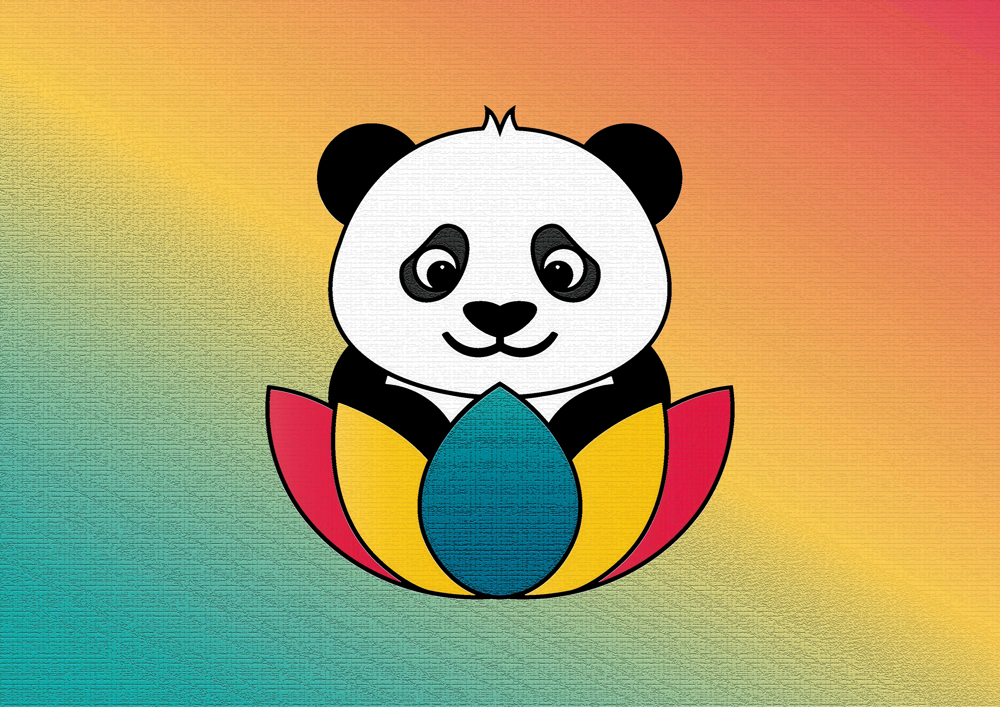
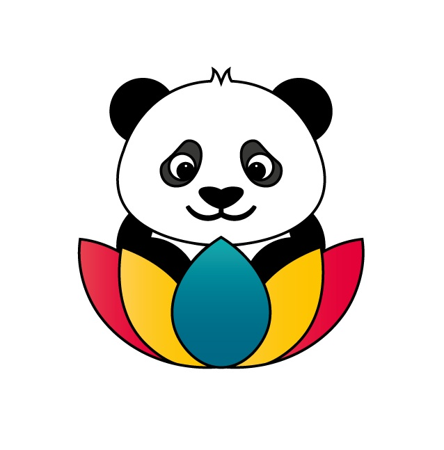

¿QUIENES SOMOS?

Somos un proyecto académico orientado a la conceptualización y diseño de un sitio web multilingüe enfocado en la difusión de la riqueza cultural de China para una audiencia internacional. "Panda Harmony" nace como una propuesta que integra investigación cultural, diseño visual estratégico e internacionalización de contenidos, con el propósito de construir un espacio digital que promueva el respeto intercultural y la comprensión global. Nuestro enfoque combina tradición y modernidad, articulando elementos históricos, filosóficos, simbólicos y turísticos bajo una estructura clara y accesible. Más que un sitio informativo, buscamos desarrollar una experiencia digital que conecte culturas, facilite el aprendizaje y evidencie cómo el diseño web puede convertirse en una herramienta de comunicación cultural responsable.
MISIÓN
Nuestra misión es desarrollar una plataforma digital bilingüe (español–inglés) que presente la cultura china de manera rigurosa, visualmente coherente e interculturalmente sensible, integrando elementos históricos, simbólicos y turísticos en un entorno accesible para usuarios de diferentes contextos culturales. Buscamos ofrecer información clara y contextualizada que permita comprender la identidad china más allá de los estereotipos, aplicando principios de internacionalización, diseño inclusivo y organización estructurada del contenido. A través de una propuesta visual equilibrada entre tradición y modernidad, aspiramos a fomentar el aprendizaje, el respeto cultural y el interés por la diversidad global.
VISIÓN
Nuestra visión es consolidar un modelo de sitio web cultural que sirva como referente académico en la conceptualización de plataformas digitales internacionales, demostrando que el diseño web puede actuar como puente entre culturas. Aspiramos a que Panda Harmony evolucione como un espacio digital que promueva la sensibilidad intercultural, el diálogo global y la apreciación informada de las tradiciones chinas, manteniendo un equilibrio entre autenticidad cultural, claridad comunicativa y experiencia de usuario. En el largo plazo, proyectamos que esta propuesta contribuya al fortalecimiento de competencias en diseño multicultural y comunicación digital responsable.